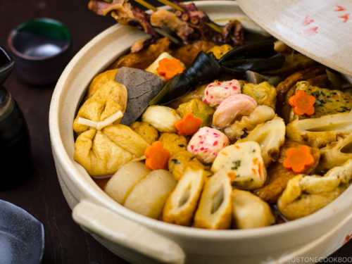

Oden (Japanese Fish Cake Stew)

What is Oden?
Oden is a one-pot dish, which is a little bit different from stew or hot pot. It’s more like a simmered dish: assorted fish balls, fish cakes, Atsuage (deep-fried tofu), hard-boiled eggs, konnyaku, and some vegetables are simmered in soy sauce-based broth.
Ingredients
For Oden Broth
- 8 cups dashi
- 4 Tbsp usukuchi soy sauce
- 2 Tbsp soy sauce
- 2 Tbsp sake
- 1 Tbsp sugar
- 1 Tbsp mirin
- 1/4 tsp kosher/sea salt
For Oden Ingredients
- 8 inch daikon radish
- 5 large eggs
- 5 strips nishime kombu (dried seaweed)
- 4 oz octopus sashimi (boiled octopus)
- 1 package konnyaku (konjac)
- 1 negi (long green onion)
- 2 packages oden set (Japanese fish cakes and fish balls)
- 1 aburaage (deep-fried tofu pouch)
- 1 kirimochi or homemade mochi
- 1 inch carrot
For Serving
- Japanese karashi hot mustard
Step by Step Process to Making Delicious Oden
To Prepare Oden Broth
- Prepare oden broth by adding dashi and the rest of the seasonings for oden broth in a large and deep pot
To Prepare the Ingredients
- Cut daikon into 1-inch (2.5 cm) pieces and remove the skin. If you use a peeler, you can peel first before you cut.
- With the knife, remove the sharp edges of the daikon to smooth it out. This is called "mentori". The rounded corners/edges will prevent the daikon from breaking and protects its shape.
- If you are going to serve rice with oden, when you rinse the rice, preserve the white water from rinsing the rice. In a medium pot, place daikon and the white water. Cook the daikon on medium heat, uncovered, until a skewer goes through, about 15-20 minutes. Tip: In Japan, this method helps get rid of the bitterness and smell from daikon and make daikon beautiful white color. Make sure to cook the daikon from cold water so the center of the daikon gets cooked slowly before boiling and that will help cook the daikon evenly.
- Cook eggs on medium heat from cold water. After boiling, reduce heat to simmer and set the timer for 12 minutes. Drain and run cold water to shock the eggs before peeling the shell.
- Tie the nishime kombu into a knot.
- Cut the octopus into 5 inches (13 cm) and skewer into a bamboo stick.
- Cut konnyaku into smaller pieces. Typically triangle shape like below.
- Add the konnyaku in water and bring it to a boil. After boiling, cook for 1 minute and drain. This is to remove the unwanted smell.
- Make mochi-filled tofu bags. Quickly run aburaage (fried bean curd) in boiling water to remove excess oil. Drain and cut in half. Cut mochi into half. Open one side of Aburaage so you can put mochi in it. Use a toothpick or kombu to tie the aburaage so the mochi won't fall out during the cooking process.
To Remove Excess Oil
- Put water in a big pot and bring it to a boil. Add oden set (Japanese fish cakes and fish balls - we call them nerimono) in boiling water for 15-30 seconds. This is a recommended process to get rid of excess oil (factory's deep-frying oil). Drain and set aside. Cut big pieces into halves. Do this in batches if all the fish cakes don't fit in the pot.
To Cook Oden
- Put everything except for all the fish cakes and mochi packets in the donabe and bring it to a boil. Once boiling, lower the heat to simmer (low), skimming off the scum and foam along the way with a fine-mesh strainer. Cook covered on low heat for 30 minutes. Tip: If you don't have time to set aside for 1 hour at the later step, increase cooking time to 45-50 minutes.
- Add all the fish cakes and mochi packets. Cook covered on low heat for 30 minutes.
To Set Aside (Important!)
- Turn off the heat and set aside (covered) for 1 hour. Simmered food tastes better when the ingredients soak up all the flavors. We do not want to keep cooking as the fish cakes become too soft and break into pieces. Tip: I usually prepare the oden for the next day. The flavor of oden is so much better after soaking all the broth overnight. Make sure to let cool completely before storing in the refrigerator.
To Serve
- Reheat the oden for 15 minutes. Serve it with a little bit of karashi (hot mustard) on the side.
Go to Top of Page
Back to Homepage